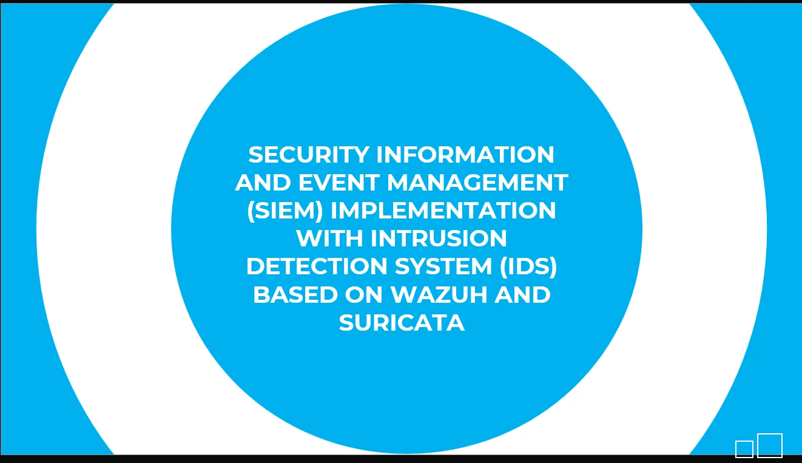
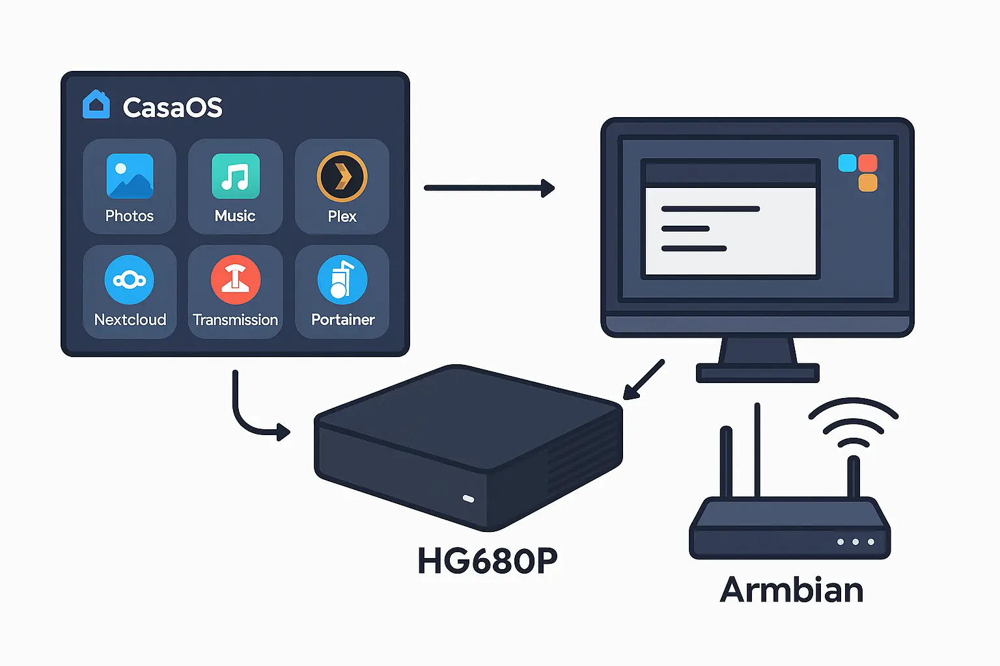
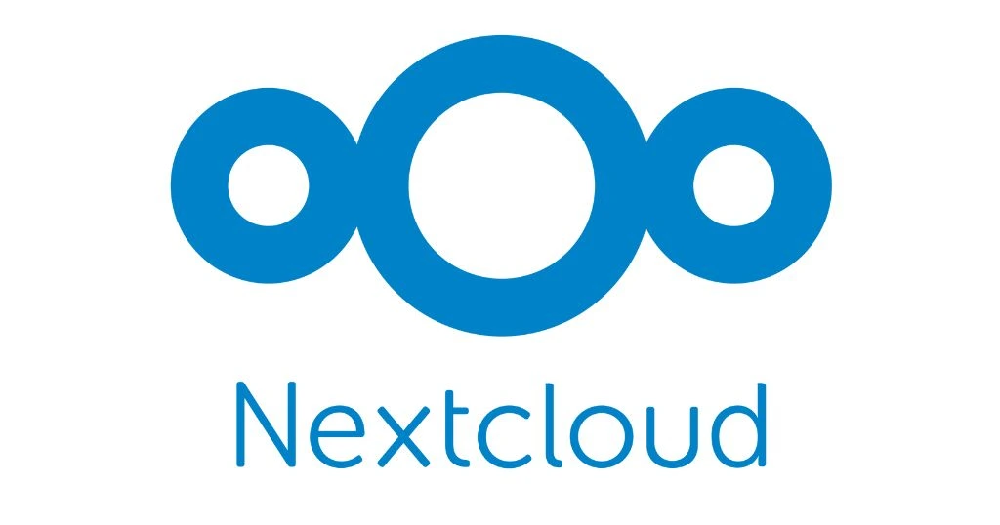
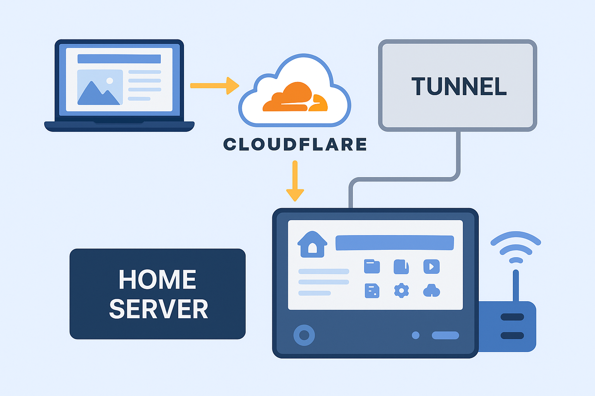
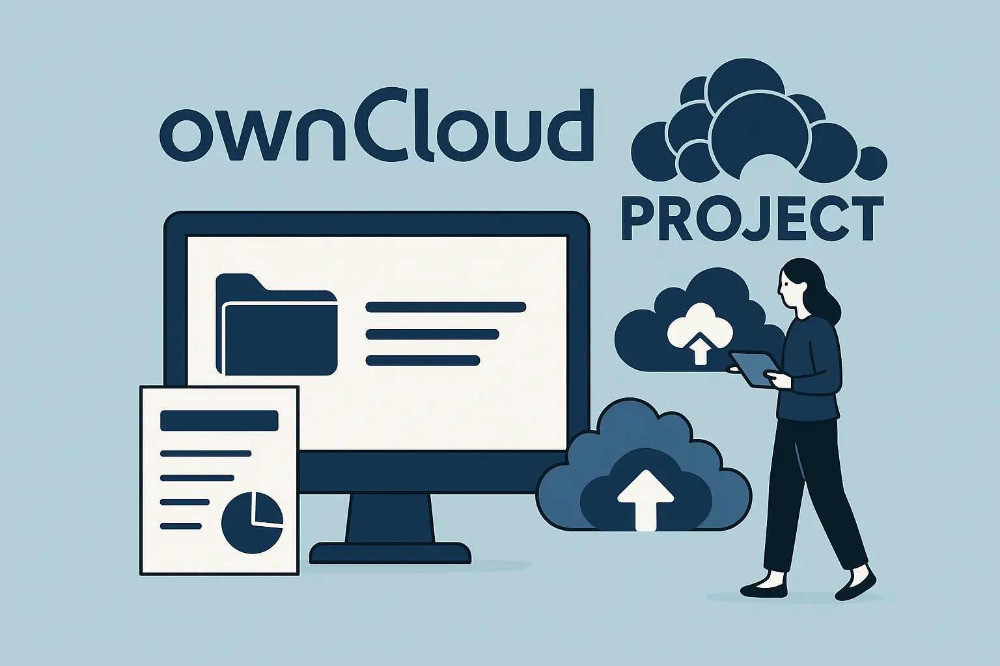
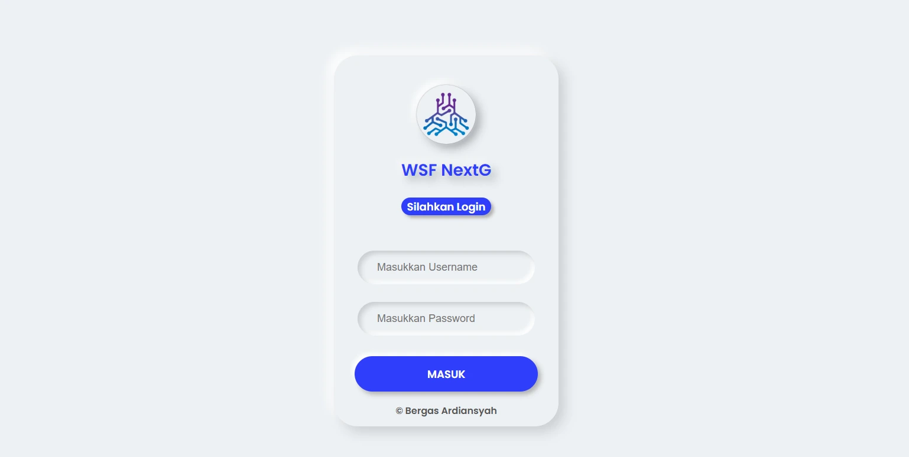
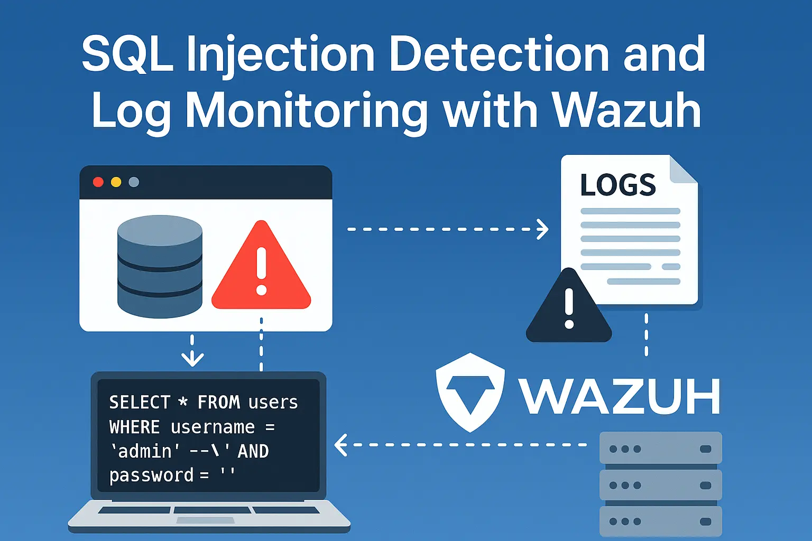

Project Saya
Beberapa proyek terkait infrastruktur, jaringan, dan keamanan siber yang pernah saya kerjakan.


Rancangan SIEM Terintegrasi dengan Network IDS berbasis Wazuh dan Suricata
Internship Project


Membuat Home Server dengan Casa OS pada STB HG680P
Self Project




Implementasi Infrastruktur Blog Berbasis Container pada Home Server
Cyber Security Ethics Project - CCIT


Simulasi setup Owncloud pada Ubuntu menggunakan VirtualBox
Linux Server Configuration Project - CCIT




Instalasi dan Konfigurasi Wazuh untuk Monitoring Server
Cyber Analyst Project - CCIT